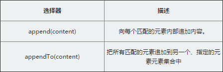
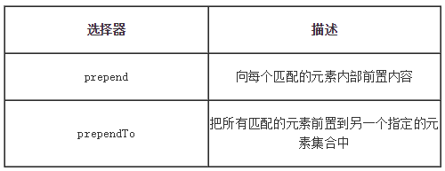

append：这个操作与对指定的元素执行原生的appendChild方法，将它们添加到文档中的情况类似。
appendTo：实际上，使用这个方法是颠倒了常规的$(A).append(B)的操作，即不是把B追加到A中，而是把A追加到B中。

测试文本
在元素内部进行操作的方法，除了在被选元素的结尾（仍然在内部）通过append与appendTo插入指定内容外，相应的还可以在被选元素之前插入，
jQuery提供的方法是prepend与prependTo

四个的区别:
append()向每个匹配的元素内部追加内容
prepend()向每个匹配的元素内部前置内容
appendTo()把所有匹配的元素追加到另一个指定元素的集合中
prependTo()把所有匹配的元素前置到另一个指定的元素集合中
测试文本